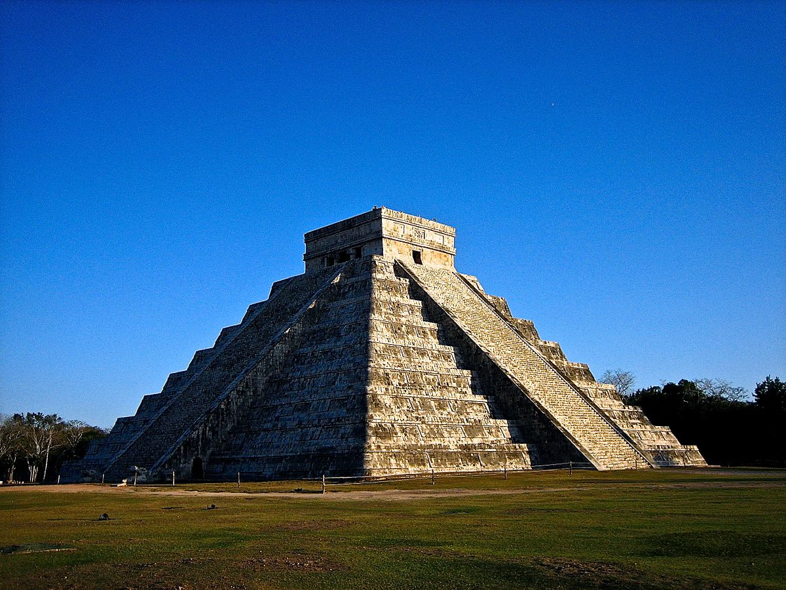
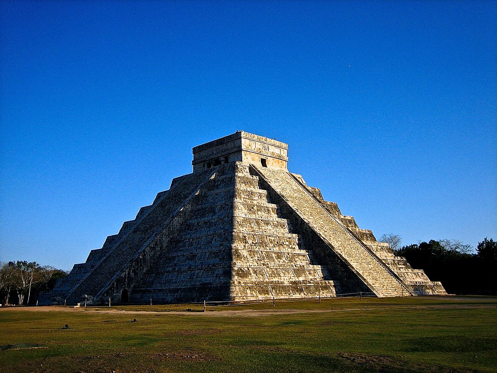
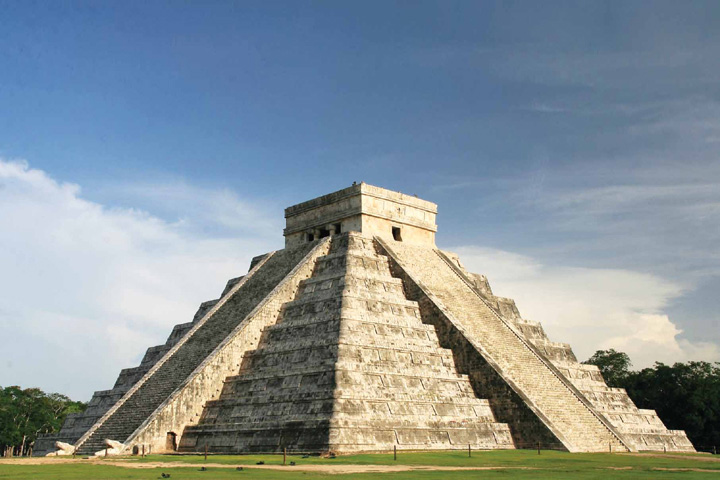
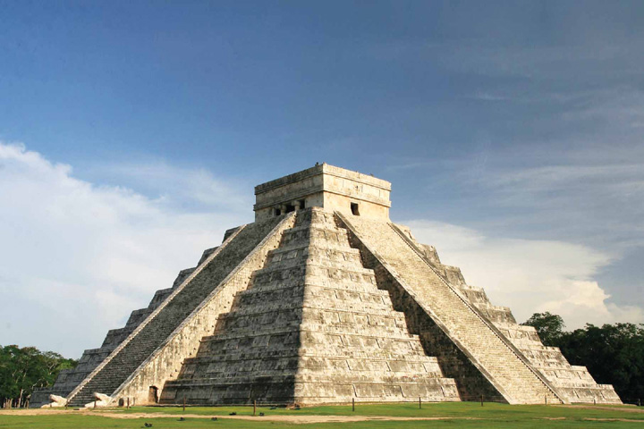

Fundada alrededor del año 525 d.C., Chichén Itzá fue una de las grandes ciudades de la civilización maya.
Es famosa por su arquitectura y sus conocimientos astronómicos, especialmente reflejados en la pirámide de Kukulcán.
Fue declarada una de las nuevas maravillas del mundo el 7 de julio de 2007, en una ceremonia celebrada en Lisboa, Portugal.
 
 
